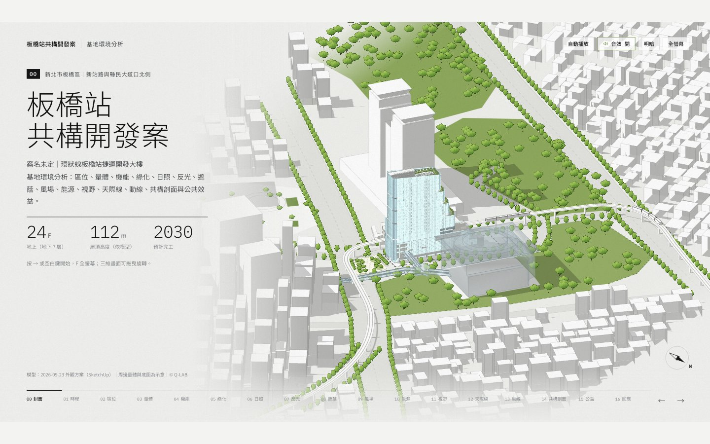
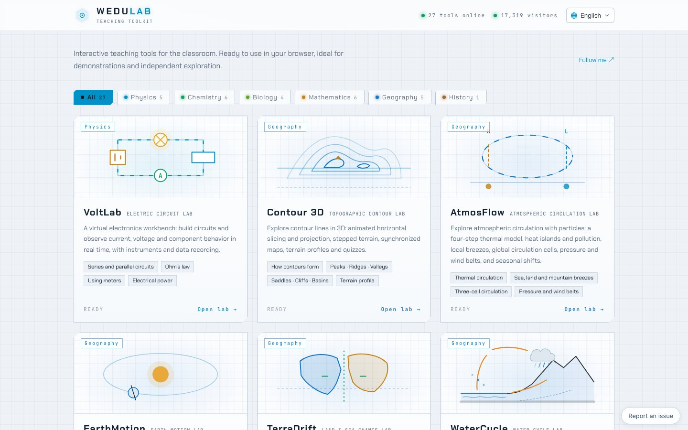
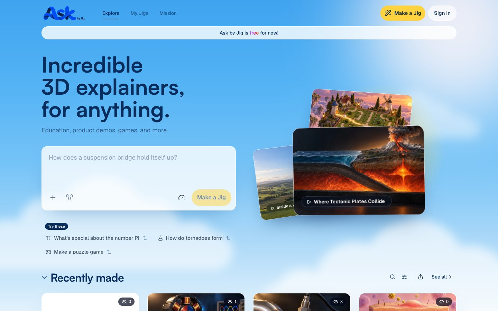

AI 熱門週報 · 10/15
本週三個 AI 熱門網頁作品
看別人用 AI 把想法變成能動的網頁，找回這週程式碼的用途
互動式網頁設計01/05
案例 1｜AI 生成的純前端 3D 資訊圖表
02/05
板橋站共構開發案｜基地環境分析
實際畫面截圖

- 把真實開發案（24 層、112 公尺、環狀線 Y16）畫成等軸 3D 基地分析。
- 分層剖面、退台綠化、空橋動線全用 HTML／CSS／SVG，沒有 3D 引擎。
- 託管在 GitHub Pages——和我們的範例頁一樣的發佈方式。
開啟這個作品（a767thycode.github.io/banqiao-station-infographic）
跟這堂課的關聯
- 整頁只有 div 定位＋SVG＋分層顯示，是 CH3 排版與 CH5 圖解的進階版。
- 樓層、席位、年份都寫成資料再渲染——正是本週的主題。
AI 熱門週報勤益科大進修部
案例 2｜27 個瀏覽器即用的教學小工具
03/05
WeduLab 互動教學工具集
實際畫面截圖

- 電路實驗、3D 等高線、大氣環流等 27 個互動工具，開網頁就能操作。
- 每個工具是獨立小網頁：Canvas 繪圖＋即時參數＋數據記錄。
- 已累積一萬七千多人次使用，中英介面、免安裝免登入。
開啟這個作品（wedulab.com）
跟這堂課的關聯
- 每個工具都是「資料 → 畫面」：拉桿改數、圖立刻重畫——CH5 的完整應用。
- 一人＋AI 協作維護 27 個工具：小團隊做大型工具集的實例。
AI 熱門週報勤益科大進修部
案例 3｜AI 生成互動 3D 說明
04/05
Ask by Jig：問什麼都給你 3D 說明
實際畫面截圖

- 輸入一句話（「龍捲風怎麼形成？」），AI 生成可旋轉的互動 3D 說明。
- 同一作品可在網頁、iPhone、Vision Pro 播放，目前完全免費。
- 站上大量他人作品：風力發電、板塊碰撞，可直接拆解學習。
開啟這個作品（ask.jig.com）
跟這堂課的關聯
- 「提問 → AI 生成 → 立即互動」：會問問題就是產出內容。
- 寫 prompt 用的就是本週語言：把資料的形狀講清楚，AI 才做得對。
AI 熱門週報勤益科大進修部
收尾
05/05
三個案例速覽
作品網址一句話
- 三個作品都沒用框架、沒裝軟體——一頁 HTML 就能開始。
- 共同點：把資料的形狀講清楚（本週的型別與 interface），AI 才生成得對。
- 本週練習做完，你手上就有和它們同類的第一件作品。
AI 熱門週報勤益科大進修部